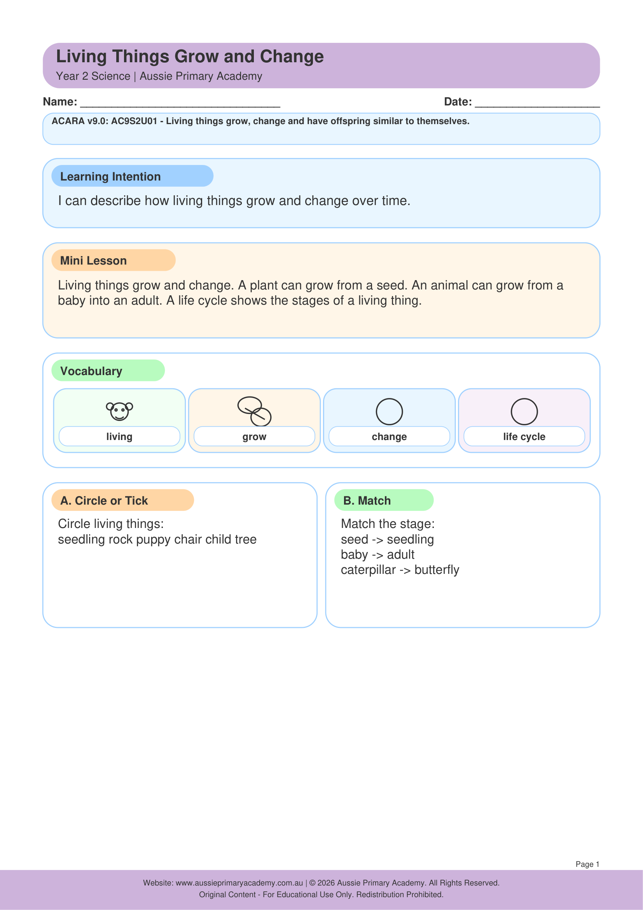

Year 2 · Science · Biological Sciences · Free Printable
Living Things Grow and Change
Explore how living things grow, change and have offspring similar to themselves.
Worksheet Preview

Learning Intention
Students will describe how living things grow, change and produce offspring that are similar to themselves.
Australian Curriculum
AC9S2U01
Recognise that living things grow, change and have offspring similar to themselves.
Teacher Notes
Use life cycle pictures of humans, kangaroos, chickens and plants. Discuss how young living things grow and change, and how offspring can be similar to their parents.
What Students Practise
- Identifying ways living things grow and change.
- Recognising similarities between offspring and parents.
- Using observations to describe living things.
About This Worksheet
This Year 2 Science worksheet supports learning about growth, change and offspring. Children can use familiar examples to notice how young living things develop and how offspring share characteristics with their parents.
How to Use It
Before completing the worksheet, discuss examples such as a baby kangaroo and an adult kangaroo, a chick and a chicken, or a seedling and a mature plant. Ask children to describe what changes as the living thing grows.
Key Vocabulary
- living thing
- grow
- change
- offspring
- similar
Parent Tip
Look at family photos or observe plants and animals together. Ask your child what is similar, what is different and what has changed as the living thing has grown.